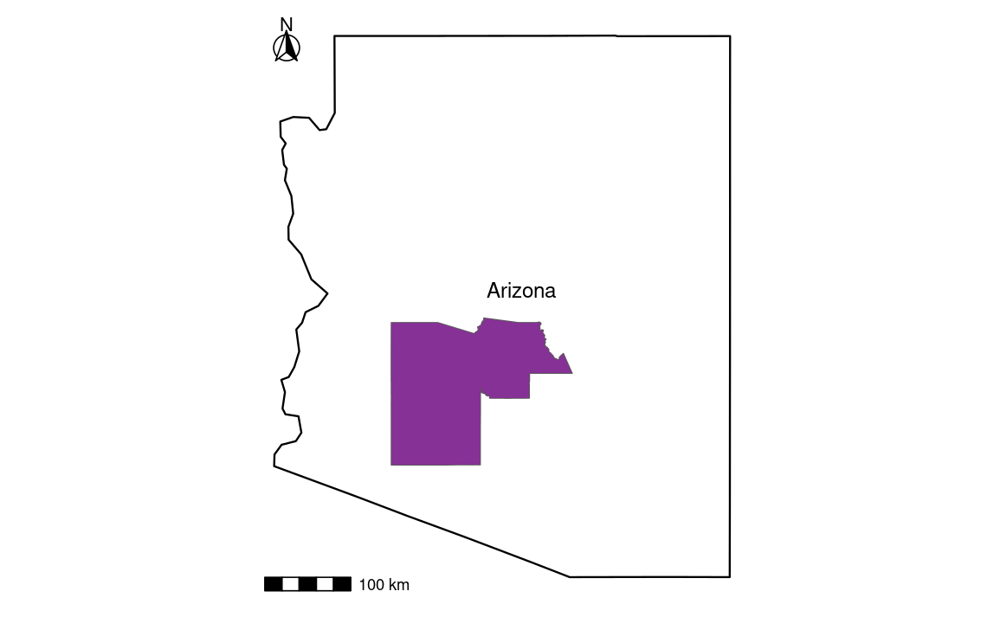
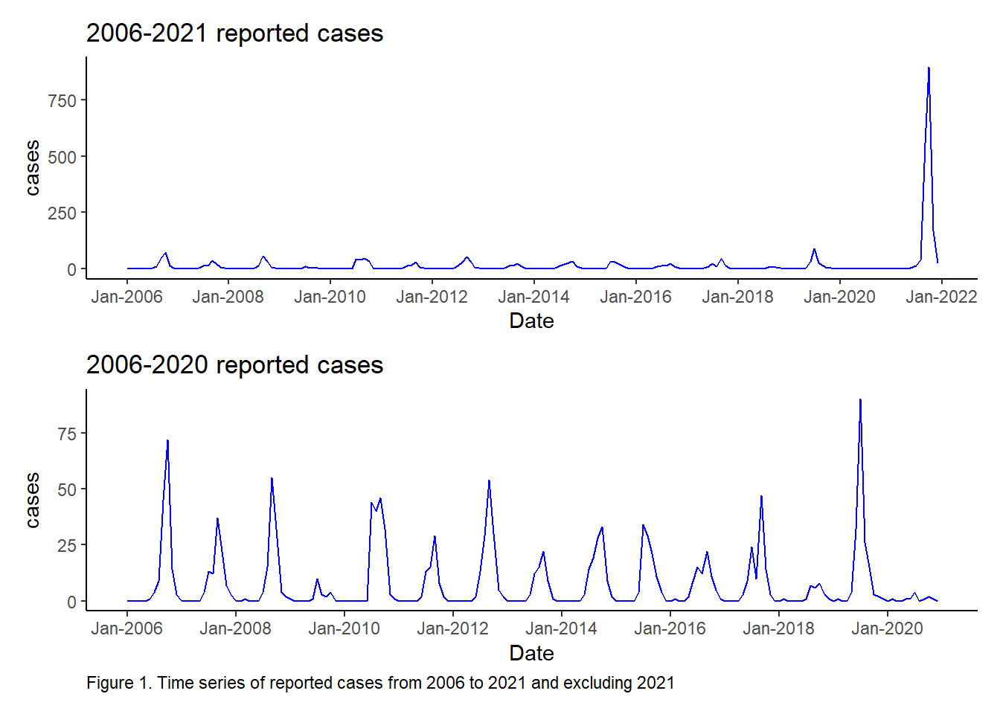
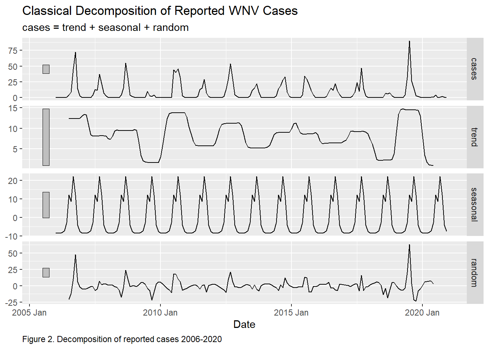
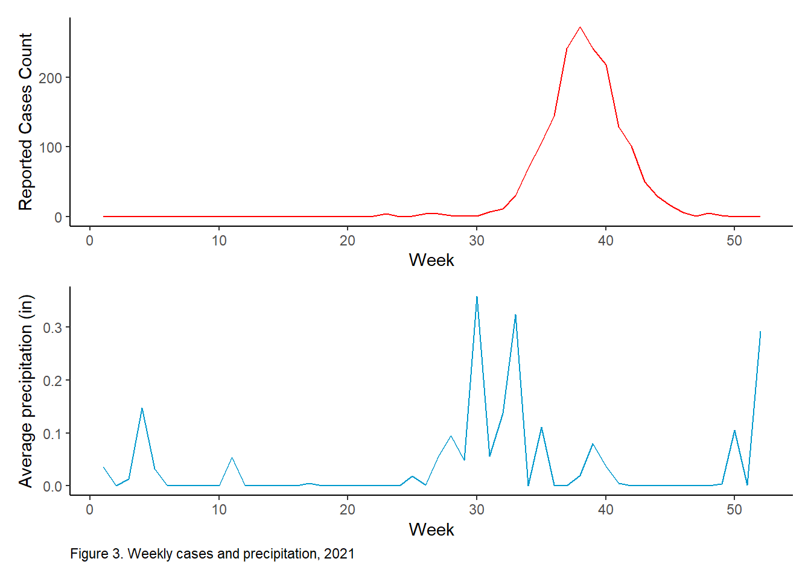
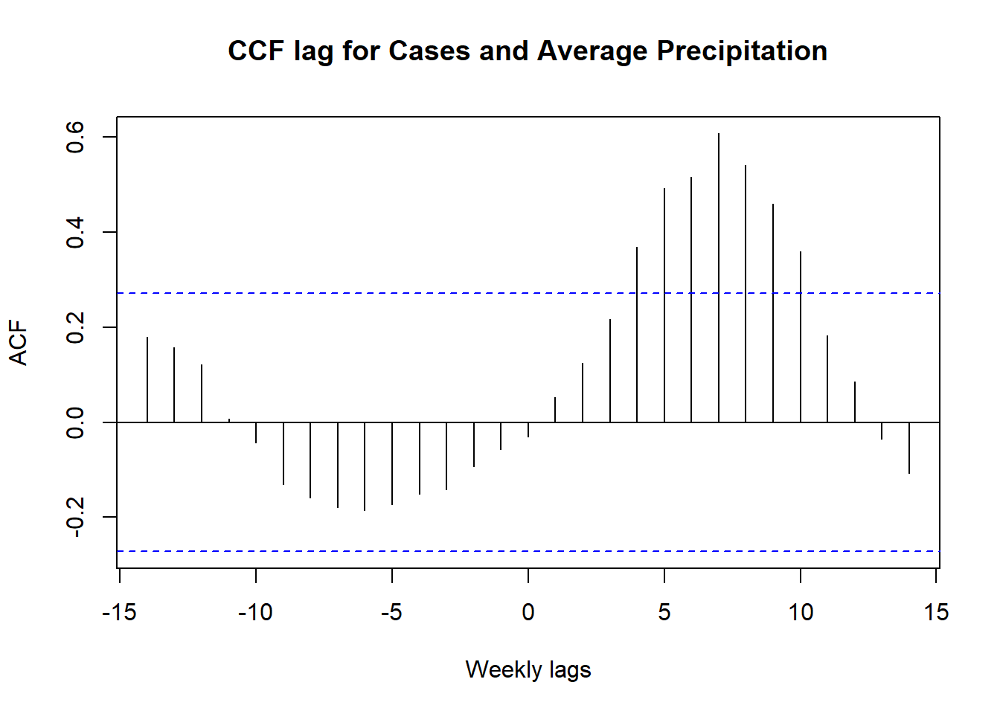

The West Nile Virus is the most common cause of mosquito-borne diseases in the United States. Since its first reported case in 1999, there have been a total of 55,443 cases.1While some may experience mild symptoms such as rashes, body aches, and vomiting. For others the West Nile Virus(WNV) can cause severe central nervous system damage and can result in death.2
This project will focus on WNV cases in Maricopa County, AZ. Between 2009 and 2018, it’s among six counties in the United States that experienced elevated occurrences of West Nile virus cases.3 WNV is an endemic in Maricopa County, since it was first detected in 2003 there have been 4 outbreaks.4 Their largest outbreak was during 2021, a total of 1,487 human WNV cases were identified; 956 (64.3%) patients had neuroinvasive disease, and 101 (6.8%) died.5 Officials believe that the severe Monsoon experienced, June 15 through September 30 was a cause behind the increase in cases.6

WNV is dependent on temperature, precipitation, and bird migratory patterns. All of these are being negatively impacted by climate change, which is expanding the geographical range of mosquitoes. Climate change is increasing the risk of human exposure to WNV, warmer temperatures are accelerating mosquito development, rainfall creates breeding sites, and the timing of bird migratory patterns are changing. Precipitation has been associated with an increase in 29-66% of reported cases with a single-day rainfall of at least 50mm within 3 weeks of diagnosis7.
Maricopa County might not be the only county reporting endemics in the next few decades.
Question
For Maricopa County’s 2021 outbreak what is the lag for precipitation with respect to reported cases?
While weekly precipitation was obtained directly from NOAA NCEI Climate Data. Precipitation levels are gathered from 12 precipitation stations in Maricopa County and the extended area.
My analysis included conducting a Cross-Correlation Function (CCF) between weekly average precipitation time series and weekly reported cases time series. Then I ran a linear regression of the lag precipitation with the reported cases.
Data Exploration
My first approach was to plot my data. I conducted a time series from 2006 - 2021. As well as 2006-2020, excluding 2021 to view prior peak number of cases.
# 2006-2021 reported cases plotw_2021 <-ggplot(west_nile_2021, aes(x = date1, y = cases)) +geom_line(color ="blue") +scale_x_date(breaks = scales::pretty_breaks(n=10),date_labels ="%b-%Y") +labs(x ="Date", title ="2006-2021 reported cases") +theme_classic()# 2006-2020 reported cases plotw_2020 <-ggplot(west_nile_2020, aes(x = date1, y = cases)) +geom_line(color ="blue") +scale_x_date(breaks = scales::pretty_breaks(n =10),date_labels ="%b-%Y") +labs(x ="Date",title ="2006-2020 reported cases",caption ="Figure 1. Time series of reported cases from 2006 to 2021 and excluding 2021") +theme_classic() +theme(plot.caption =element_text(hjust =0))# Combined plotsw_2021 / w_2020

# Decomposition of reported WNV cases as_tsibble(west_nile_2020) %>%model(classical_decomposition(cases, type ="additive")) %>%components() %>%autoplot() +labs(caption ="Figure 2. Decomposition of reported cases 2006-2020",title ="Classical Decomposition of Reported WNV Cases",x ="Date") +theme(plot.caption =element_text(hjust =0))

There does appear to be seasonality within WNV reported cases. But not much of a trend. I further analyzed the 2021 outbreak looking at weekly reported cases and weekly average precipitation.
# Weekly reported casesweekly_cases_p <-ggplot(cases_2021, aes(x = week, y = cases)) +geom_line(color ="red") +labs(x ="Week", y ="Reported Cases Count") +theme_classic()# Weekly average precipitationweekly_rainfall_p <-ggplot(cases_2021, aes(x = week, y = average_prcp)) +geom_line(color ="deepskyblue3") +labs(x ="Week", y ="Average precipitation (in)",caption ="Figure 3. Weekly cases and precipitation, 2021") +theme_classic() +theme(plot.caption =element_text(hjust =0))# Generate plotweekly_cases_p / weekly_rainfall_p

Observing the plot created, average precipitation peaks at week 30. Reported cases peak lags a couple weeks afterwards.
Statistical Analysis
The approach I took to determine the lag time for average precipitation with respect to reported cases was the method sample Cross-Correlation-Function (CCF).
# Edit title and x-axisplot(ccf_values, main ="CCF lag for Cases and Average Precipitation",xlab ="Weekly lags")

I determined the lag to be in 7 weeks. A 7 week lag of average precipitation is a predicate of weekly reported cases. In other words, an increase in rainfall tends to be followed by an increase in reported cases, but with a delay of 7 weeks. New precipitation and cases time series were created with the lag.
# Create a lagged precipitation# Run a lag for 7 weekslag7<-lag(cases_2021$average_prcp, 7)#remove rows with NA values due to laglag7 <-na.omit(lag7)# remove first seven values of casescases <- cases_2021$cases[8:52]
Linear Model
To verify the statistical significance of the determined lag, a linear model was created (α < 0.05).
# Linear modelmod <-lm(cases ~ lag7)tab_model(mod, pred.labels =c("Intercept", "Average precipitation w. 7 week lag"),dv.labels ="Linear Model of Reported Cases",string.ci ="Conf. Int (95%)",string.p ="p-value",title ="Table 1. Linear Model Results",digits =4)
Table 1. Linear Model Results
Linear Model of Reported Cases
Predictors
Estimates
Conf. Int (95%)
p-value
Intercept
12.7167
-5.0063 – 30.4396
0.155
Average precipitation w. 7 week lag
684.8930
473.8901 – 895.8959
<0.001
Observations
45
R2 / R2 adjusted
0.499 / 0.487
The results illustrate that average precipitation with a lag of 7 weeks is a significant predictor for reported weekly cases (p<0.001). This linear model is statistically significant. On average we expect to see reported cases to increase by 684 for each one inch increase in average precipitation for 2021. Overall model predictability is moderate, 48% change of reported cases can be explained by average precipitation.
Conclusion
After conducting the analysis, this model reveals the statistically significant relationship between precipitation and reported WNV cases. The findings suggests 7 weeks subsequent to changes in precipitation notable changes are seen in WNV reported cases.
Although a high correlation is suggested, it is important to note the data sets small sample size of 52 samples. This can lead to potential bias. There is also the assumption that all reported cases of WNV were of residents exposed in Maricopa County. Positive cases could have been contracted outside of the county, but they are still included in the total count. In addition when averaging the 12 precipitation stations potential bias is introduced by assuming the reported cases are equally distributed across the county. If infections were predominantly concentrated in specific locations, the averaging of precipitation from multiple sites might dilute the impact of higher precipitation levels experienced in those areas. The disparities in infection distribution across the county could potentially mask the true association between extreme precipitation events in specific areas and the reported cases.
Future investigations should consider the location of reported cases in Maricopa county. As well as potentially expanding this analysis to include 2006 to 2021 data. It would be interesting to see if a 7 week lag of precipitation remains the same even for years that did not experience torrential rain. Or for years that saw a smaller outbreak.
Further data wrangling and analysis can be found at my Github repository.
Centers for Disease Control and Prevention. (n.d.). Migratory birds and spread of West Nile virus in the Western Hemisphere - volume 6, number 4-August 2000 - emerging infectious diseases journal - CDC. Centers for Disease Control and Prevention. https://wwwnc.cdc.gov/eid/article/6/4/00-0401_article#:~:text=Migratory%20birds%20have%20long%20been%20suspected%20as%20the%20principal%20introductory,of%20migratory%20birds%20(and%20mosquitoes↩︎
Centers for Disease Control and Prevention. (n.d.). Migratory birds and spread of West Nile virus in the Western Hemisphere - volume 6, number 4-August 2000 - emerging infectious diseases journal - CDC. Centers for Disease Control and Prevention. https://wwwnc.cdc.gov/eid/article/6/4/00-0401_article#:~:text=Migratory%20birds%20have%20long%20been%20suspected%20as%20the%20principal%20introductory,of%20migratory%20birds%20(and%20mosquitoes↩︎
Weinhold B. (2009). Rainy day reaction: human west nile viruses cases respond to weather patterns. Environmental health perspectives, 117(7), A311. https://doi.org/10.1289/ehp.117-a311b↩︎